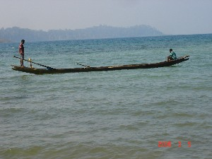
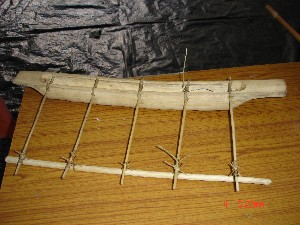

नाव सम्बंधी
ɑrɑːyccoːme आराऽयच्चोऽमे MORPH: ɑrɑːy-coːme. N सं. back of rudder; पतवार का पिछला सिरा. SD: boat related, नाव सम्बंधी.
ɑreɖɑ आरेडा MORPH: ɑ-reɖɑ. N सं. running boat; भागती हुई नाव. SD: boat related, नाव सम्बंधी.
billu बील्लू VAR: rowɑ-kʰuro रोवा-खूरो. N सं. boat (big); बड़ी नाव. SD: boat related, नाव सम्बंधी.
|
 bilu बीलू VAR: biːlʷu बीऽल्वू. N सं. ship; जलपोत; जहाज़. SD: boat related, नाव सम्बंधी.
bilu बीलू VAR: biːlʷu बीऽल्वू. N सं. ship; जलपोत; जहाज़. SD: boat related, नाव सम्बंधी.
 |
boyɑ1 बोया N सं. outrigger, wooden extension of the rowing boat; उलण्डी, नाव का लकड़ी से बना विस्तार. SD: boat related, नाव सम्बंधी. SEE: boyɑ2 ‘small island’ ‘छोटा द्वीप बोयाhm:{2}’; cɔŋɔ ‘outrigger’ ‘बोया चौञौ ’; cɔrɔkʰ2 ‘horizontal bars of outrigger’ ‘बोया की आड़ी डंडियां चौरौखhm:{2}’; kʰuduli ‘outrigger’ ‘बोया खूदूली ’; ʈʰel ‘bamboo of outrigger hanging in the water’ ‘पानी में लटकता हुआ उलण्डी के बांस का टुकड़ा ठेल ’.
 |
cɔɲɔ3 चौञौ Etym: Bo; बो. N सं. outrigger; बोया. SD: boat related, नाव सम्बंधी. SEE: boyɑ ‘outrigger’ ‘उलण्डी बोया ’; cɔŋɔ ‘outrigger’ ‘बोया चौञौ ’; cɔrɔkʰ2 ‘horizontal bars of outrigger’ ‘बोया की आड़ी डंडियां चौरौखhm:{2}’; kʰuduli ‘outrigger’ ‘बोया खूदूली ’; ʈʰel ‘bamboo of outrigger hanging in the water’ ‘पानी में लटकता हुआ उलण्डी के बांस का टुकड़ा ठेल ’; cɔɲɔ1 ‘dump, of forest’ ‘कचरा, जंगल का चौञौhm:{1}’; cɔɲɔ2 ‘problems’ ‘समस्याएं चौञौhm:{2}’.
cɔrɔkʰ1 चौरौख N सं. anchorage; लंगर डालने का स्थान. SD: boat related, नाव सम्बंधी. SEE: cɔrɔkʰ2 ‘horizontal bars of outrigger’ ‘बोया की आड़ी डंडियां चौरौखhm:{2}’; cɔrɔkʰ3 ‘support of wood’ ‘सहारा, लकड़ी का चौरौखhm:{3}’.
|
cɔrɔkʰ2 चौरौख N सं. horizontal bars of outrigger; बोया की आड़ी डंडियां. SD: boat related, नाव सम्बंधी. SEE: boyɑ ‘outrigger’ ‘उलण्डी बोया ’; cɔŋɔ ‘outrigger’ ‘बोया चौञौ ’; kʰuduli ‘outrigger’ ‘बोया खूदूली ’; ʈʰel ‘bamboo of outrigger hanging in the water’ ‘पानी में लटकता हुआ उलण्डी के बांस का टुकड़ा ठेल ’; cɔrɔkʰ1 ‘anchorage’ ‘लंगर डालने का स्थान चौरौखhm:{1}’; cɔrɔkʰ3 ‘support of wood’ ‘सहारा, लकड़ी का चौरौखhm:{3}’.
cɔrɔkʰcom चौरौखचोम MORPH: cɔrɔkʰ-com. N सं. tied ends of the horizontal bars of the outrigger; बोया की आड़ी डंडियों का बंधा हुआ सिरा. SD: boat related, नाव सम्बंधी.
 |
ecɔrɔkʰrɔɑ एचौरौखरौआ MORPH: ecɔrɔkʰ-rɔɑ. N सं. raft made by tying logs together; लट्ठों का बेड़ा. SD: boat related, नाव सम्बंधी.
 ekotrɑ2 एकोत्रा N सं. hollow of the canoe; डोंगी का बीच वाला गहरा भाग या गड्ढा. SD: boat related, नाव सम्बंधी. SEE: ekotrɑ1 ‘inside’ ‘भीतर एकोत्राhm:{1}’.
ekotrɑ2 एकोत्रा N सं. hollow of the canoe; डोंगी का बीच वाला गहरा भाग या गड्ढा. SD: boat related, नाव सम्बंधी. SEE: ekotrɑ1 ‘inside’ ‘भीतर एकोत्राhm:{1}’.
erɑːtɔwfo एराऽतौवफो N सं. rudder (the part that is held in hand); पतवार पकड़नेवाली जगह. SD: boat related, नाव सम्बंधी.
 |
erpʰiɖo एरफीडो MORPH: er-pʰiɖo. N सं. sides of a canoe; डोंगी के किनारे. SD: boat related, नाव सम्बंधी.
|
eɽɑcɔme एड़ाचौमे MORPH: eɽɑ-cɔme. VAR: ercɔ एरचौ; ereɔ एरेऔ. N सं. edge, of canoe; डोंगी का कोना. SD: boat related, नाव सम्बंधी.
|
etɑkʰtɑ एताखता MORPH: etɑkʰ-tɑ. N सं. railing; upper side of the canoe; रेलिंग; डोंगी के ऊपर का किनारा. SD: boat related, नाव सम्बंधी.
ɛtcokʰ ऐत्चोख MORPH: ɛt-cokʰ. N सं. a kind of oar; एक प्रकार की पतवार. ɛt-cokʰom ऐत्चोखोम. (He) oars. (वह) पतवार चलाता है।. SD: boat related, नाव सम्बंधी.
irfide ईरफीदे N सं. edge, of a rudder; पतवार का किनारा. SD: boat related, नाव सम्बंधी.
irulu1 ईरूलू N सं. blade of a rudder; पतवार का फाल. SD: boat related, नाव सम्बंधी. SEE: irulu2 ‘eyes, of fish’ ‘आंख, मछली की ईरूलूhm:{2}’.
jukʰul1 जूखूल N सं. end/corner of a boat; नाव का सिरा. SD: boat related, नाव सम्बंधी. SEE: jukʰul2 ‘fish’ ‘मछली जूखूलhm:{2}’.
 kerɑle केराले N सं. middle of a log of a boat; नाव के बीच का हिस्सा. SD: boat related, नाव सम्बंधी, hunting & gathering, शिकार एवं संचय सम्बंधी.
kerɑle केराले N सं. middle of a log of a boat; नाव के बीच का हिस्सा. SD: boat related, नाव सम्बंधी, hunting & gathering, शिकार एवं संचय सम्बंधी.
 |
kʰuduli खूदूली VAR: kuɖuli कूडूली. N सं. wooden platform hanging from the boat; नाव से बाहर निकला हुआ लकड़ी का जंगला. SD: boat related, नाव सम्बंधी. SEE: cɔŋɔ ‘outrigger’ ‘बोया चौञौ ’; boyɑ ‘outrigger’ ‘उलण्डी बोया ’; cɔrɔkʰ2 ‘horizontal bars of outrigger’ ‘बोया की आड़ी डंडियां चौरौखhm:{2}’; ʈʰel ‘bamboo of outrigger hanging in the water’ ‘पानी में लटकता हुआ उलण्डी के बांस का टुकड़ा ठेल ’.
kʰuɖo2 खूडो N सं. sticks, of the outrigger; उलण्डी की लकड़ी. SD: boat related, नाव सम्बंधी. SEE: kʰuɖo1 ‘tie around’ ‘बांधना खूडोhm:{1}’.
moːe मोऽए Etym: Bo. N सं. wood used for making outrigger, the boya; उलण्डी/बोया बनाने में प्रयोग आने वाली लकड़ी. SD: boat related, नाव सम्बंधी, flora, फूल-पत्ती.
pɑl पाल N सं. canoe; the dongi; एक प्रकार की नाव, डोंगी. SD: boat related, नाव सम्बंधी, hunting & gathering, शिकार एवं संचय सम्बंधी.
 |
pʰɔʈmo फौटमो VAR: pʰoʈmo फोटमो; pʰɔtmo फौतमो. N सं. paddle; rudder; oar used for rowing; पतवार; पैडल; आलिश. ʈʰ-ico-pʰɔtmo ठीचोफौतमो. my paddle/oar. मेरी पतवार. SD: boat related, नाव सम्बंधी. NT: In Andamanese Hindi it is called ‘Alish’. अण्डमानी हिन्दी में इसे ‘आलिश’ कहते हैं।.
reɔtotibitʰuŋ रेऔतोतईबीथूङ MORPH: reɔ-tot-ibitʰuŋ. N सं. iron-hook of the boat; नाव का कुण्डा. SD: boat related, नाव सम्बंधी. NT: The hook from which the rope is tied to anchor the boat. इस कुण्डे से रस्सी बांधकर नाव को किनारे पर बांधा जाता है।.
rɛːŋŋɔtɑrɑːfu रैऽङङौताराऽफू N सं. anchor; लंगर. SD: boat related, नाव सम्बंधी.
|
roɑtɑrɑcɔme रोआताराचौमे MORPH: roɑ-tɑrɑ-cɔme. Etym: Jeru; जेरू. N सं. rear, of the boat; नाव का पिछला सिरा. SD: boat related, नाव सम्बंधी, hunting & gathering, शिकार एवं संचय सम्बंधी.
robɑ रोबा VAR: ɽoɑ ड़ोआ; roː रोऽ; roːwɑ रोऽवा; roɔ रोऔ. N सं. boat; नाव. robɑ tɛr jukʰul bol beko cɔbe रोबा तैर जूखूल बोल बेको चौबे. Tie a rope at the end of the boat. नाव के सिरे में रस्सी बांधो।. SD: boat related, नाव सम्बंधी.
roːɔ रोऽऔ N सं. canoe; dongi, a kind of boat; डोंगी, एक प्रकार की नाव. SD: boat related, नाव सम्बंधी, hunting & gathering, शिकार एवं संचय सम्बंधी.
 |
 rowɑ2 रोवा VAR: rɔɑ रौआ. N सं. boat; dongi; नाव; डोंगी. rowɑ-m-bɑlobe रोवा म बालोबे. to get onto the boat. नाव में चढ़ना. ʈʰ-ɑrɑ-rɔɑ ठारारौआ. my dongi. मेरी डोंगी. SD: boat related, नाव सम्बंधी. SEE: rowɑ1 ‘boat’ ‘नाव चलाना रोवाhm:{1}’.
rowɑ2 रोवा VAR: rɔɑ रौआ. N सं. boat; dongi; नाव; डोंगी. rowɑ-m-bɑlobe रोवा म बालोबे. to get onto the boat. नाव में चढ़ना. ʈʰ-ɑrɑ-rɔɑ ठारारौआ. my dongi. मेरी डोंगी. SD: boat related, नाव सम्बंधी. SEE: rowɑ1 ‘boat’ ‘नाव चलाना रोवाhm:{1}’.
 |
rowɑɖelo रोवाडेलो MORPH: rowɑ-ɖelo. N सं. boat, small; छोटी डोंगी. SD: boat related, नाव सम्बंधी.
rowɑtɑrɑcɔme रोवाताराचौमे MORPH: rowɑ-tɑrɑ-cɔme. N सं. stern, rear of the boat; डोंगी का पिछला सिरा. SD: boat related, नाव सम्बंधी.
 |
 rowɑtɛrco रोवातैरचो MORPH: rowɑ-tɛr-co. VAR: ɛrcɔ ऐरचौ. N सं. front of the dongi; डोंगी का अगला सिरा. SD: boat related, नाव सम्बंधी.
rowɑtɛrco रोवातैरचो MORPH: rowɑ-tɛr-co. VAR: ɛrcɔ ऐरचौ. N सं. front of the dongi; डोंगी का अगला सिरा. SD: boat related, नाव सम्बंधी.
rɔɑtɛrkʰuro रौआतैरखूरो MORPH: rɔɑ-tɛr-kʰuro. N सं. boat, big; बड़ी डोंगी. SD: boat related, नाव सम्बंधी.
|
 rɔːwɔ रौऽवौ VAR: ruɔ रूऔ; ɽoɔ ड़ोऔ. N सं. boat; canoe; dongi; नाव; नाव; डोंगी. SD: boat related, नाव सम्बंधी, hunting & gathering, शिकार एवं संचय सम्बंधी.
rɔːwɔ रौऽवौ VAR: ruɔ रूऔ; ɽoɔ ड़ोऔ. N सं. boat; canoe; dongi; नाव; नाव; डोंगी. SD: boat related, नाव सम्बंधी, hunting & gathering, शिकार एवं संचय सम्बंधी.
|
 ʈʰel ठेल VAR: tʰel थेल. N सं. bamboo of outrigger hanging in the water; पानी में लटकता हुआ उलण्डी के बांस का टुकड़ा. SD: boat related, नाव सम्बंधी, hunting & gathering, शिकार एवं संचय सम्बंधी. SEE: boyɑ ‘outrigger’ ‘उलण्डी बोया ’; cɔŋɔ ‘outrigger’ ‘बोया चौञौ ’; cɔrɔkʰ2 ‘horizontal bars of outrigger’ ‘बोया की आड़ी डंडियां चौरौखhm:{2}’; kʰuduli ‘outrigger’ ‘बोया खूदूली ’.
ʈʰel ठेल VAR: tʰel थेल. N सं. bamboo of outrigger hanging in the water; पानी में लटकता हुआ उलण्डी के बांस का टुकड़ा. SD: boat related, नाव सम्बंधी, hunting & gathering, शिकार एवं संचय सम्बंधी. SEE: boyɑ ‘outrigger’ ‘उलण्डी बोया ’; cɔŋɔ ‘outrigger’ ‘बोया चौञौ ’; cɔrɔkʰ2 ‘horizontal bars of outrigger’ ‘बोया की आड़ी डंडियां चौरौखhm:{2}’; kʰuduli ‘outrigger’ ‘बोया खूदूली ’.
ʈoxotɑːycow टोखोताऽयचोव N सं. raft; लट्ठों का बेड़ा या शहतीर. SD: boat related, नाव सम्बंधी, hunting & gathering, शिकार एवं संचय सम्बंधी.
ujjɑo ऊज्जाओ N सं. side or the outer surface of the boat; डोंगी के बगलवाली बाहरी सतह. SD: boat related, नाव सम्बंधी.